|
|
|
Мамайский Новый Год Вечер четверга - народ или пакует, или уже сидит на рюкзаках. Результаты телефонных переговоров - едут все! Пятница, приехав с последней электричкой, семь человек, семь досок и семь рюкзаков попадают в знакомую квартиру, есть рекорд ! :) Как обычно, после чая и веселых разговоров укладываемся спать около двух и в пять уже подъем. Сварили глинтвейн - три термоса, но один забыли, еще забыли вино и детский рюкзак, потому как дитё не удавалось поставить на ноги в такую рань и горе-отец уже начал волноваться. Однако молодому 4-хлетнему поколению пора уже привыкать к бродячей жизни - спать в электричке в обнимку с девченками :) 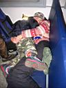 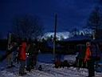 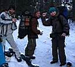 Передав Андрюшку в Выдрино в добрые бабушкины руки, проехали
Толбазиху и оказались на Мамае. Названия каковы, а? Просто чудо! Эх,
примораживает немного, даже куржак на особо горячих появился. Перед
подъемом подключили колонки к плееру и вперед! Те, кто шел с музыкой,
пришли первые :) А в зимухе были посетители! Ребята из Ангарска, знакомые
лица, но имен не знаем. Ребята угостили нас пельменями, переехали жить
в кунг и пошли кататься, а мы сварили обед, чай, налопались и ... тоже
пошли кататься. Хотя уже и два часа, хотя и день самый короткий в году,
и до Лесного путь не близок, но мы свое возьмем! 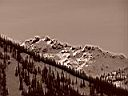 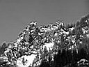 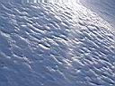 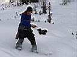 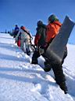 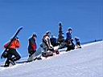 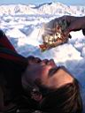 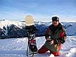 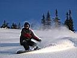 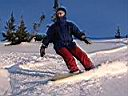 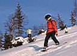 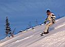 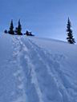 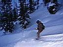 Отличная тропа, выведена кем-то на солнечный гребень. Склоны подготовлены природой просто идеально! Катуха супер! Пролетали склон и пищали от восторга! Йо-хо! У-ху!-У-ху-ху! Банзай! Парви каридолу! Трассы и ратраки отдыхают в Байкальске, Мамайский рельеф рулит! И это с учетом повсеместного отсутствия снега где-то там, в цивилизации! Девченки не отстают, молодчинки! Особенно радует Катя, после травмы колена вполне прилично катается! Вова, дружище, надо почаще встречаться ;-) Проводили солнце за гору и повезли в зимуху отличное настроение. А настроение просто не может быть другим, ведь нас ожидают - теплое зимовье, горячий чай, мешок сладостей, салаты, громкая музыка, водка, гости, вино, мандарины и виноград, шампанское в бокале, веселые песни под гитару и гармонику, ёлка, торт, фейерверки, дуделки, подарки, дружеское снего-валяние и много-много позитива, потому что с вечера и за полночь - мы отмечаем Мамайский Новый Год !!! 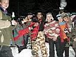
Фотографы - Катя, Марина, Лёшкин, Язык, Галя. Декабь 2006. Белокрылов А.Ю. Слюдянка.
|
Участники мероприятия: 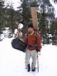 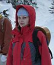 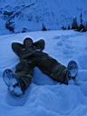
|